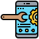

¿Beneficios Git?
Git puede beneficiar desde el equipo de desarrollo hasta el equipo de marketing y todo lo demás ya que Git no solo sirve para el desarrollo ágil de software, sino también para los negocios ágiles.

Flujo de trabajo en la rama de función
capacidad de ramificación, ya que son fáciles y económicas de fusionar, lo que facilita el flujo de trabajo entre muchos usuarios de Git
Desarrollo distribuido
cada desarrollador obtiene su propio repositorio local, con un historial completo de confirmaciones

Solicitudes de extracción
Si tu equipo usa Git, lo más probable es que no tengas que capacitar a los nuevos empleados sobre flujo de trabajo

Comunidad
Ideal pra la desinfección de la superficie de las personas, el arco de desinfección puede convertirse en una herramienta muy eficaz